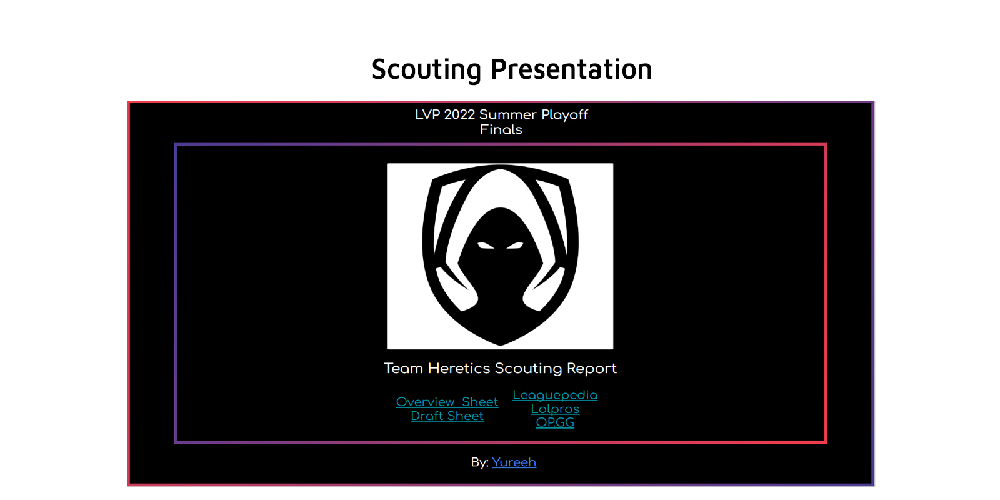
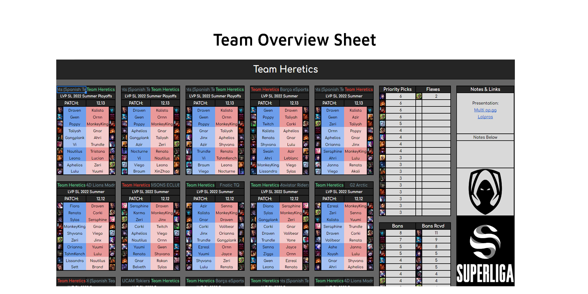
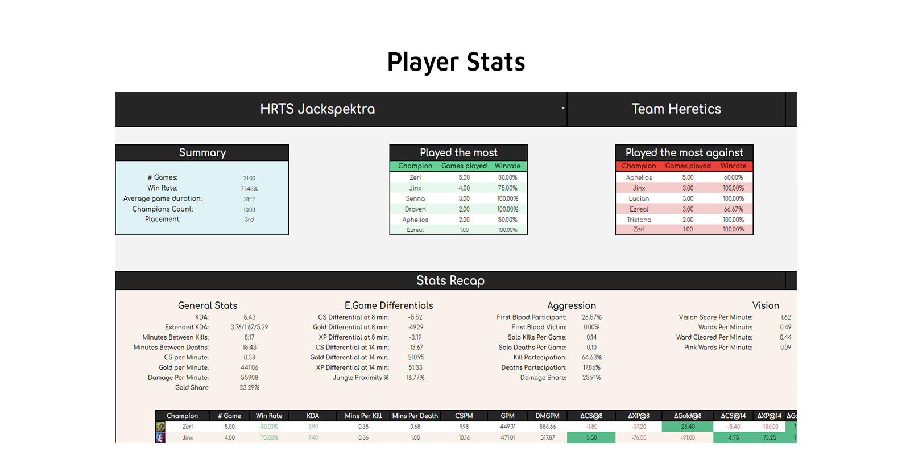
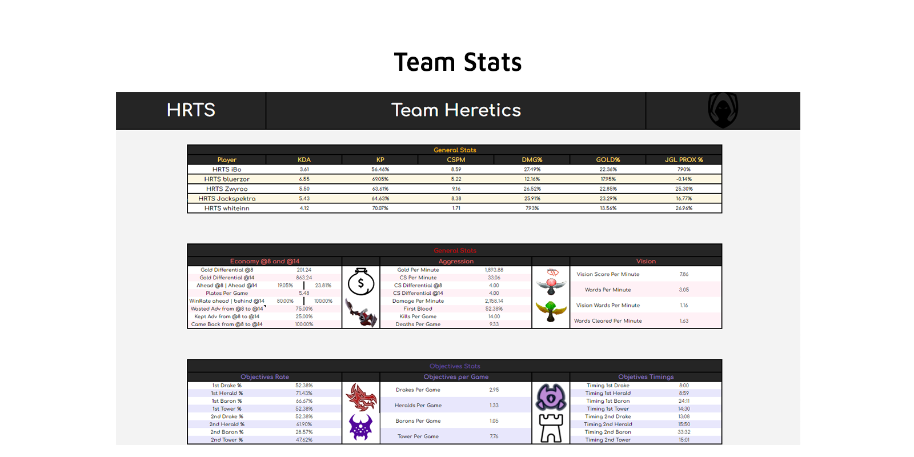
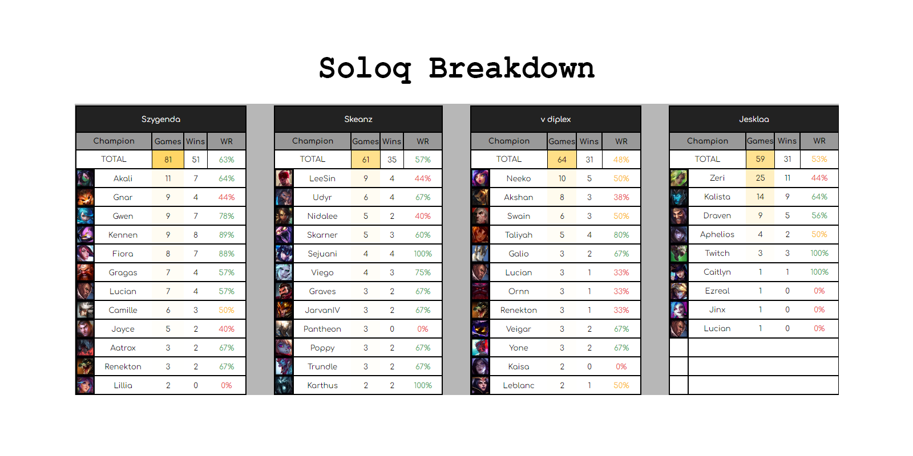
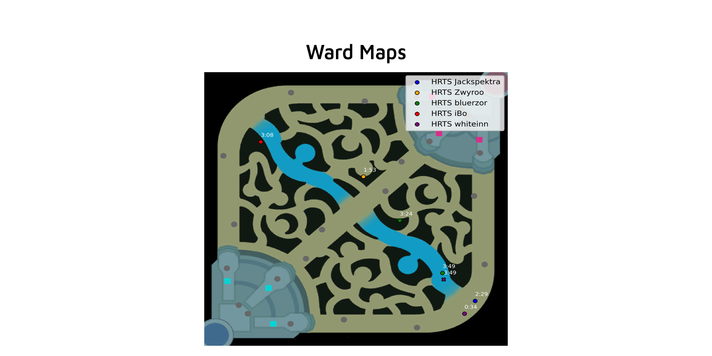

Work Samples
I'm always open to questions and feedbacks!











Portfolio
Summary
I am a data analyst with a Bachelor's degree in Computer Science and a Master's degree in Data Science. Over the past several years, I have gained extensive experience in data analysis and scouting for esports teams, working for companies such as LEC & LVP, KOI, and Esport Empire.
Work Experience
All-round AnalystLEC & LVP | KOI
Joined KOI where I worked for both the main team in LEC and for the LVP Academy.
AnalystPG Proving Grounds Summer | Dsyre
Won PG Proving Grounds 2022 Summer Split and the following Promotion Tournament with Dsyre, earning a spot in the PG Nationals 2022 Split.
Data AnalystEUM Spring | Bifrost
Joined Bifrost as Data Analyst for EU Masters Spring Event, reaching Top 8 starting from play-ins.
AnalystPG Nationals Spring | Esport Empire
Worked for Esport Empire as Scout & Data analyst in PG Nationals during 2022. During Spring we were able to reach 5th place.
Education
Data ScienceMaster's Degree, University of Bologna
Enrolled in a Master's Degree program in Data Science at the University of Bologna
Computer ScienceBachelor Degree
In 2022 I got a Bachelor Degree graduating in Computer Science at University of Bologna in Italy.
Data AnalystOn my own
In the past years I have been studying a lot learning the skills required to be an analyst.